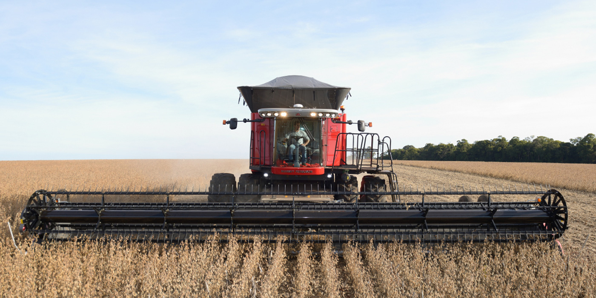

é uma das colheitadeiras mais avançadas do mercado, projetada para maximizar a eficiência e produtividade no campo. Com seu sistema de fluxo axial, a máquina oferece um desempenho superior e uma maior capacidade de processamento.
Características
A Case Axial Flow
- Modelo: Case Axial Flow (disponível em diferentes variantes de modelos)
- Potência do Motor: Até 500 hp, garantindo alta performance em grandes lavouras
- Sistema de Separação: Fluxo axial que proporciona maior eficiência na separação dos grãos, com menor perda
- Capacidade do Tanque: Até 12.000 litros, para maior autonomia durante a colheita
- Largura de Corte: Até 12 metros, garantindo maior área de trabalho por hora
- Sistema de Limpeza: Equipado com ventiladores de alta capacidade para garantir grãos limpos e sem impurezas
- Altura de Descarga: Até 5 metros, proporcionando um descarregamento rápido e eficiente
- Manobrabilidade: Direção integral para facilitar o manuseio em terrenos variados

Benefícios
A Case Axial Flow oferece diversos benefícios que aumentam a produtividade e reduzem os custos operacionais:
- Alta Produtividade: A capacidade de corte e separação é otimizada, permitindo uma colheita mais rápida e eficaz.
- Menor Perda de Grãos: O sistema de fluxo axial é projetado para reduzir a perda de grãos, aumentando o rendimento.
- Economia de Combustível: O design eficiente do motor e do sistema hidráulico proporciona uma economia significativa de combustível.
- Menor Custo de Manutenção: Com peças de alta durabilidade e fácil acesso para manutenção, os custos com reparos são reduzidos.
- Facilidade de Operação: O painel de controle intuitivo e os sistemas de monitoramento garantem fácil operação e controle durante a colheita.
Aplicações
Esta máquina é extremamente versátil, sendo ideal para uma ampla gama de culturas. Algumas das principais aplicações incluem:
- Soya: Alta eficiência na colheita de soja, com sistemas adaptados para minimizar danos aos grãos.
- Milho: Sistema de separação ideal para garantir que o milho seja colhido com o mínimo de perdas.
- Trigo: Equipamento perfeito para colheitas em grandes áreas de trigo, otimizando tempo e recursos.
- Arroz: A Case Axial Flow é capaz de trabalhar em condições de solo úmido, ideal para a colheita de arroz.
- Feijão: A precisão da máquina permite colheitas rápidas e eficientes de feijão, com mínimo desperdício.
- Cana-de-açúcar: Acolhendo grandes áreas de cana, com tecnologia que assegura a preservação da cultura.